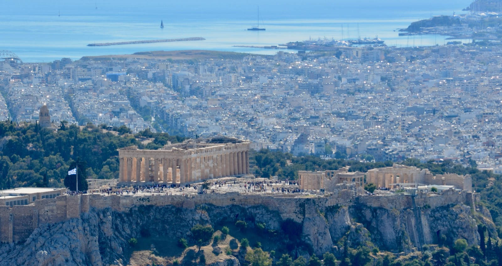

Acropolis
The Acropolis of Athens is one of the most important and recognizable monuments in the world. Rising above the city on a rocky hill, it stands as a symbol of ancient Greek civilization, democracy, and artistic achievement..

Greece
Travel photography moments from athens.
Athens – The Historic Heart of Greece Athens, the capital of Greece,
is a city where ancient history and modern life blend seamlessly.
Known as the birthplace of democracy and Western civilization, Athens
offers visitors an extraordinary journey through more than 3,000 years
of history.
Dominating the city skyline is the Acropolis, crowned by the
magnificent Parthenon, one of the world’s most celebrated monuments.
Nearby, the Ancient Agora, the Temple of Olympian Zeus, and countless
archaeological treasures reveal the city’s remarkable past.
Beyond its historical landmarks, Athens is a vibrant and dynamic
metropolis. Neighborhoods such as Plaka, Monastiraki, and Psiri charm
visitors with their narrow streets, traditional tavernas, lively
markets, and welcoming atmosphere. Modern cafés, rooftop bars, and
contemporary art spaces showcase the city’s creative energy and
evolving character.
Athens is also an excellent gateway to Greek culture. Visitors can
experience authentic Mediterranean cuisine, explore world-class
museums, and enjoy breathtaking views from hills such as Lycabettus,
especially at sunset.
Whether you are passionate about history, architecture, photography,
or simply discovering local life, Athens offers an unforgettable
experience where the ancient world meets the modern Mediterranean
lifestyle.

The Acropolis of Athens is one of the most important and recognizable monuments in the world. Rising above the city on a rocky hill, it stands as a symbol of ancient Greek civilization, democracy, and artistic achievement..

The Acropolis complex also includes several remarkable monuments, such as the Erechtheion with its elegant Caryatid statues, the Temple of Athena Nike, and the monumental Propylaea gateway. Together, these structures showcase the architectural brilliance and cultural influence of ancient Greece.

Its name means beautifull marble. A multi-purpose stadium with a history that spans over seven centuries.

The Hellenic Parliament, located in the heart of Athens at
Syntagma Square, is one of the city’s most important political and
historical landmarks. The impressive neoclassical building serves
as the seat of the Greek Parliament and represents the center of
Greece’s democratic government.
In front of the Parliament
stands the Tomb of the Unknown Soldier, a monument dedicated to
Greek soldiers who lost their lives in service to the country.
Visitors gather throughout the day to watch the ceremonial
changing of the guard performed by the Evzones, the Presidential
Guard, dressed in their distinctive traditional uniforms.

The Holy Church of Pantanassa is one of the oldest and most
beloved Byzantine churches in Athens. Located in the vibrant
Monastiraki Square, at the foot of the Acropolis, the church
stands as a peaceful reminder of the city’s rich religious and
cultural heritage.